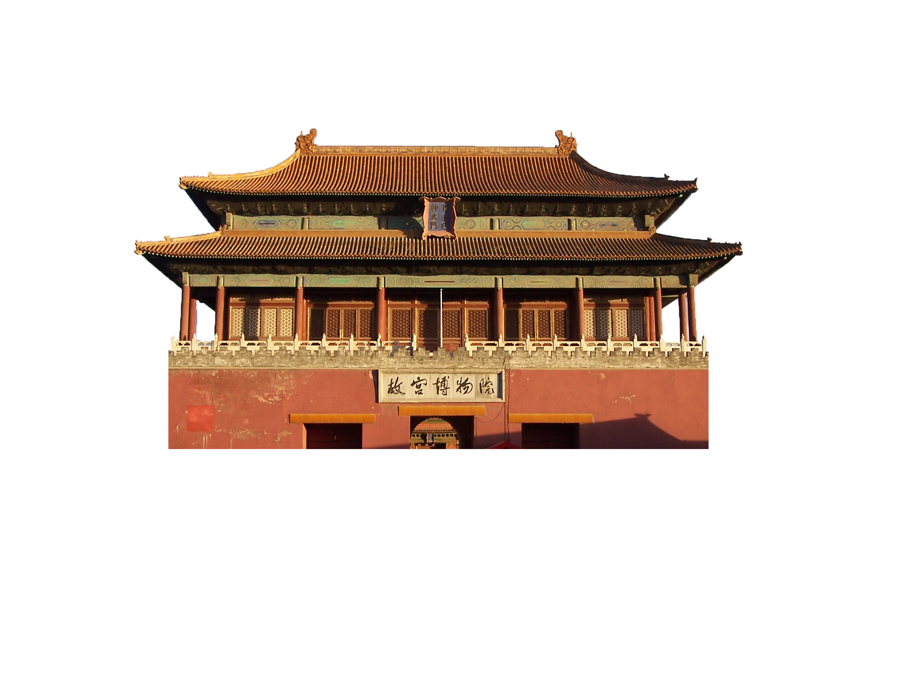
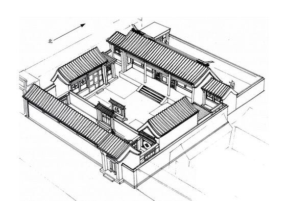
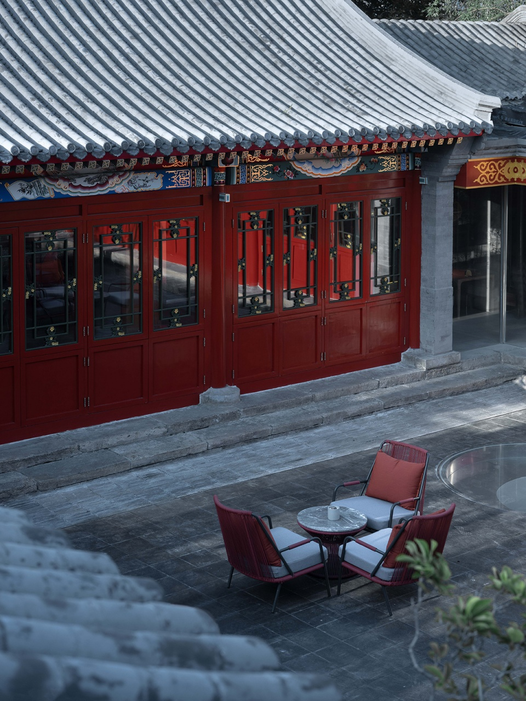
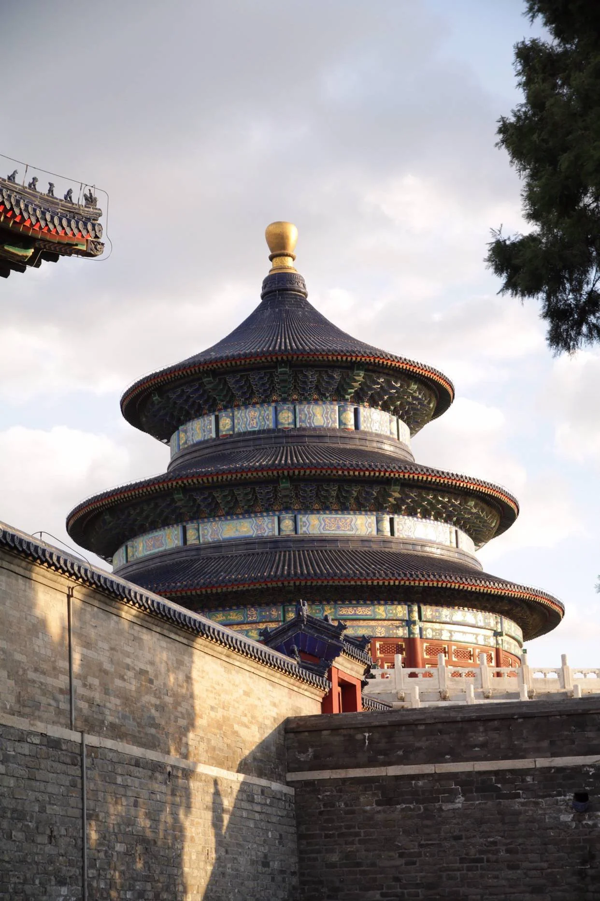

The Forbidden City (Chinese: 紫禁城; pinyin: Zǐjìnchéng) is a palace complex in Dongcheng District, Beijing, China, at the center of the Imperial City of Beijing. It is surrounded by numerous opulent imperial gardens and temples including the 22 ha (54-acre) Zhongshan Park, the sacrificial Imperial Ancestral Temple, the 69 ha (171-acre) Beihai Park, and the 23 ha (57-acre) Jingshan Park. It is officially administered by the Palace Museum.
The Forbidden City was constructed from 1406 to 1420, and was the former Chinese imperial palace and winter residence of the Emperor of China from the Ming dynasty (since the Yongle Emperor) to the end of the Qing dynasty, between 1420 and 1924. The Forbidden City served as the home of Chinese emperors and their households and was the ceremonial and political center of the Chinese government for over 500 years. Since 1925, the Forbidden City has been under the charge of the Palace Museum, whose extensive collection of artwork and artifacts were built upon the imperial collections of the Ming and Qing dynasties. The Forbidden City was declared a World Heritage Site in 1987.
The complex consists of 980 buildings, encompassing 9,999 rooms and covering 720,000 m2 (72 ha)/178 acres. The palace exemplifies the opulence of the residences of the Chinese emperor and the traditional Chinese palatial architecture, and has influenced cultural and architectural developments in East Asia and elsewhere. It is listed by UNESCO as the largest collection of preserved ancient wooden structures in the world. Since 2012, the Forbidden City has seen an average of 14 million visitors annually, and received more than 19 million visitors in 2019. In 2018, the Forbidden City's market value was estimated at 70 billion USD, making it both the world's most valuable palace and the most valuable piece of real estate anywhere in the world.
The Forbidden City in Beijing is one of the largest and most well-preserved wooden structures in the world. It was listed as the first batch of national key cultural relics in 1961.
Beijing-style architecture is typical of northern China's architecture, and its special geographical location determines the historical status of Beijing-style architecture. Every carving and every painting of Beijing-style architecture is still a priceless treasure of northern culture after hundreds of years of vicissitudes.
Building Introduction
Northern China's architecture is most typical of the Beijing school, and the most typical of the Beijing school is the courtyard. It has evolved over 700 years.
Historically, there were more than a thousand hutongs in the old Beijing Sijiu City, and the residential courtyards in the capital were scattered in each of them.
Both the princes and the common people were inextricably linked to the courtyards. Hutong courtyards are one of the elements of old Beijing's folk culture, a carrier of the common people's life and work, and have profound historical value.
The Hutong Courtyard, a masterpiece of Beijing architecture
A masterpiece of Beijing architecture - Siheyuan (5 photos)
The location, decoration, carving and painting of the courtyard reflect the long-standing folk customs and traditional culture, and express people's pursuit of happiness, beauty, prosperity and good fortune under specific historical conditions.
The courtyard is square and wide, the scale is appropriate, the courtyard is friendly and quiet, and it has a simple and strong living atmosphere.
In addition to the courtyard, palace architecture is also the masterpiece of Beijing architecture, among which the Forbidden City is the masterpiece of palace architecture.
It also represents the highest level of traditional architectural art. It can be seen as a huge courtyard, with broader functions and clearer division of labor, giving people a sense of royal majesty.
Chinese palaces are large groups of buildings where ancient emperors lived, and were the most important type of architecture in ancient China, with palace architecture focusing on the prominence of imperial power and a clear division of hierarchy in each area. The Forbidden City is like a complex version of a quadrangle enlarged n times, but much more complex in terms of rituals, with "front hall and back bed", "three dynasties and five doors", "left ancestor and right community" and other elaborate, decorative details The luxurious decorative details represented the top level of architectural art at that time.
Typical cases
Northern China's architecture is most typical of the Beijing School, and the most typical of the Beijing School is the courtyard. Siheyuan is the collective name for traditional houses with a plan layout of main house, inverted house, east and west rooms around the middle courtyard.
The basic feature of Siheyuan is that the houses and courtyards are symmetrically arranged according to the north-south axis, facing south, with the gate generally opening at the southeast corner and a shadow wall built inside the gate so that outsiders cannot see the activities inside the courtyard. The main house is located on the central axis, flanked by the ear rooms and the left and right rooms. The main room is the living room of the elders, while the compartments are for the younger generation to live in. This solemn layout also reflects the traditional character of the orthodox and strict people of northern China.
With its unique architectural style and construction method, Beijing's courtyard has become a representative of northern China's courtyard-style residential architecture, and is a treasure in the history of Chinese residential architecture.


The Temple of Heaven, formerly known as the Temple of Heaven and Earth, is located on the east side of Yongdingmen Street in Dongcheng District, Beijing. It was the place for the Ming and Qing emperors to worship the heavens, pray for grain and pray for rain. It is the largest surviving ancient sacrificial complex in China.
The Temple of Heaven was built in the 18th year of Ming Yongle (1420) and renamed as "Temple of Heaven" in the 9th year of Ming Jiajing (1530). Its main ancient buildings are concentrated in the inner altar, which is separated into two parts: the south and the north by an east-west partition wall, with doors in the partition wall. The inner altar is composed of three groups of ancient buildings: Huanqiu, praying for the valley altar and Zaigong. Pray for the valley altar is located in the northern part of the inner altar, Huanqiu altar is located in the southern part of the inner altar, Zaigong is located in the western part of the inner altar, a 360-meter-long, 28-meter-wide, 2.5-meter-high Danjian Bridge connecting Huanqiu altar and pray for the valley altar. The inner altar is surrounded by the East Heavenly Gate, the North Heavenly Gate, the West Heavenly Gate, the Guangli Gate, the Zhaoheng Gate and the Taiyuan Gate. The Temple of Heaven has high historical value, scientific value and unique artistic value, as well as profound cultural connotation.
On March 4, 1961, the Temple of Heaven was announced as the first batch of national key cultural relics protection units by the State Council of the People's Republic of China
